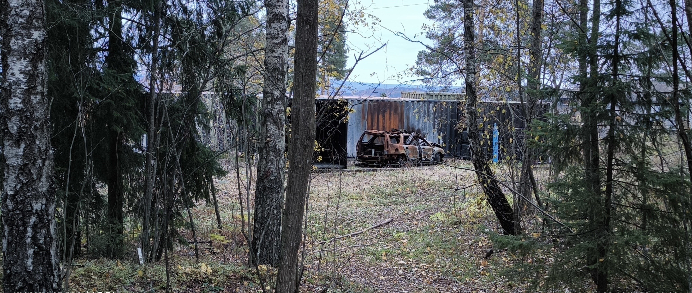

Rett ved et boligfelt på Starum i Østre Toten kommune, driver sivilforsvaret (distrikt Oppland) øvelser. Det har de holdt på med siden 1960-tallet. De nærmeste naboene bor bare noen få meter fra øvelsesområdet. Området er åpent og ligger ved siden av en skog, mens boligfeltet til naboene er kun dekket av noen trær. Sivilforsvaret har lokaler like ved øvelsesområdet og har hjemmel i loven til å bruke dette området, fordi det er deres område. Naboene mener derimot at det blir for mye røyk og støy fra Sivilforsvarets område. Sivilforsvaret gjør øvelser i perioden juni til oktober.
Journalister: Sirvan Chalabi, Hamsa Casale og Alexander MyrvoldSivilforsvaret gjør øvelser nær et boligområde - Naboer blir plaget av støy og røyk
Sivilforsvaret
- Sivilforsvaret er som oftest til stede. Noen ganger nødetater, som brannvesen, men som regel ikke. Låner ut anlegget til kommunalt brannvesen, sånn at de kan gjøre noen av sine brannøvelser. Sommerferie, juli, rundt jul foretas det ikke øvelser. Høy aktivitet i tidlig februar og fram mot mai. En del øvelser i høstsesongen. Øvelser har som regel varighet i tre uker. Seks kursperioder på tre uker. Den siste uken er det høy øvelsesaktivitet. Det foregår ikke kursøvelser i helgene. Bare på hverdager.
- Det er Sivilforsvaret som eier dette området? Eller er det kommunen som eier det?
- Sivilforsvarets anlegg på Starum var tidligere forsvaret sin eiendom. Vi har aldri hatt eie av det arealet. Det er forsvaret sin eiendom. Rettere sagt staten, henholdsvis Justis- og beredskapsdepartementet som eier området.
Varsling om detaljer av øvelsene synes Distriktssjef Roar Nilsen vil være vanskelig å få til, men en timeplan vil kunne være mulig å gi dem, da det allerede finnes en timeplan de følger. Han bemerker at Sivilforsvaret er pliktig til å være i beredskap.- Jeg har ikke hørt om at naboene har lyst til å bli varslet. Det er ingenting av det vi driver med som er hemmelig, men vi må se på om det er praktisk mulig å varsle, men vi vet som regel ikke hva som skal bli brent før vi står der og skal gjøre det. Men, det er de tre-ukers periodene som er da vi har aktivitet. Vi har timeplan over øvelser. Kan hende det ligger på nettet. På sivilforsvaret.no ligger det en del informasjon, og beskrivelse av kursene og hva vi driver med. Er ikke sikker på om timeplanen også står der. Vi har mange typer kurs, og det vil kunne dukke opp ting. Ikke så lett å si hva vi foretar oss til en hver tid. Så å forholde seg til en timeplan, er det som ville være mest fornuftig. Vi er et kurssenter som driver med brenning og slikt, og har ikke drevet øvelser som kan medføre forurensning. Det er en del av samfunnsansvaret vårt å øve på dette. Vi har drevet med denne aktiviteten siden 1967, og aktiviteten har vært dempet siden da. Nå brenner vi forresten kun organiske ting.
Distriktssjefen har ikke hørt noe om noen klager fra naboer, men husker en hendelse angående vanntilførselen. Vi fant et gammelt bilvrak som var på Sivilforsvaret sitt øvelsesområde. Bilvraket så brent ut. Vi viste ham bildet. - Jeg har aldri fått beskjed om noen som har blitt plaget av støy eller røyk fra sivilforsvarets øvelser. Kjenner ikke til klage som ble sendt til kommunen. En ting jeg husker er at en nabo har fått problemer med vanntilførselen. Aldri noe på grunn av forurensning. Vi har en uttalelse fra tidligere fylkesmann, på hva vi får lov til å brenne. Vi brenner metall og treverk. Bilvraket er et historisk bilvrak, som vi ikke brenner lenger. Vi brenner bilvrak av treull. Jeg vet ikke det (Når vi spør han om bilvraket). Det stiller jeg meg undrende til.
- Hvis du ser det bildet som er sendt? Ser du en gasstank? Hva gjør den der?
- Vi øver på gassbrann. Tanken som er på bildet er tom. Vi har mulighet til å bruke den til øving av gassbrann. Vi har ikke gass i den stående der, det har vi ikke lov til. Merker at sivilforsvarets oppgave er å ta vare på sivilbefolkningen, ved fred, krig og krise. Det er 8000 tjenestemenn i sivilforsvaret. Vi bruker sivilforsvarsloven og forskrift for sivilforsvar i tjeneste. Vi kan pålegge alle å tjenestegjøre i sivilforsvaret som er myndige og under en viss alder. Har dere våpen?
- Sivilforsvaret har ingen våpen. Vi har beskyttelse fra Genevekonvensjonen.
- Var dere i aksjon under Covid?
- Under Covid sto sivilforsvaret på A-hus med rensing på ambulansenivå når de hentet ut pasienter. Når de stengte Norge, så var sivilforsvaret der i forbindelse med innreiseslutt. Vi støttet også opp internasjonalt for å hjelpe Italienske helsemyndigheter vedrørende Covid.
- Bruker dere forsvarets uniform?
- Sivilforsvaret har en egen uniform. Bærer Genevekonvensjonsmerket på ryggen.
- I hvor mange distrikter har Sivilforsvaret områder?
- Straum er den største avdelingen til Sivilforsvaret. I Norge er vi 20 distrikter som er geografisk bestemt. Primæraktiviteten er for alle distriktene øvinger/kurs.
Naboer
- Hva synes du om at Sivilforsvaret gjør øvelser ved der du bor?
- Det er forsåvidt greit det, men det er jo litt plagsomt med den røyken. Det er røyken som er verst. Vi kjenner at det lukter, og vi har to hester og lukten går rett til hestene der.
- Du har ikke andre dyr?
- Noen hunder. Jeg driver egentlig ikke med hundeoppdrett. Går bare tur med hundene i området.
- Har dere opplevd at det kommer røyk inne i huset?
- Røyken merker man ikke inne i huset, men det lukter ute på gårdsplassen.
- Finnes det noen form for varsling?
- Ikke som jeg vet om.
- Har du bodd her lenge?
- Ja.
- Sivilforsvaret har ifølge naboen vært på Starum helt siden han flyttet inn.
- Ja, det har de. Visste på en måte om øvelsene, da dette er en lokalkjent sak.
- På spørsmål om han er redd for at det skal bli skogbrann svarer han: "Nei, jeg er ikke det. Mer plagsomt med røyken og støyen."
- Har det vært noen hendelser hvor du har blitt skremt og trodd at det er virkelige hendelser som skjer?
- Nei, jeg har ikke det. Jeg vet at de holder på der. Samboeren min klager på lufta og hun har lungesykdom.
- Har dere merket noe i sommertid?
- Nei, det er høst og vår.
- Intisar Casale, som er nærmeste nabo, blir plaget av støy og røyk. (I forhold til røyken kan kanskje Naturvernforbundet si noe).
- Hva synes du om at Sivilforsvaret har øvelser nær din bolig?
- Jeg liker absolutt ikke det. Noen ganger blir det for mye. Det går ut over oss. Vi har nesten ikke mulighet til å sitte ute, eller ha vinduene oppe, sier Intisar Casale.
- Du hører støy inne i huset ditt?
- Ja, det gjør jeg. Det er firehjuling. Når det er brannøvelser og andre øvelser som leteaksjon, er det skriking og roping. Da hører jeg nesten alt inne i huset mitt, selv om vinduet og døra er igjen.
- Når starter de med øvelser, på dagen?
- Noen ganger starter de plutselig kl. 08.00. Og de er ikke ferdig før 15.00-16.00 på ettermiddagen. Firhjulingen kan de kjøre med senere også. Noen ganger fram til 19.00-20.00 på kvelden. Noen ganger er det i helger, og da er det ganske lenge. De begynner fra sånn Juli/August med kjøring av firehjuling. August, september og oktober er da de starter brenning av materialer.
- Hva er det støyen kommer av, er det at de snakker/skriker til hverandre?
- Ja, de skriker høyt til hverandre. For det er et eller annet apparat de bruker, som gjør det vanskelig for dem å snakke med hverandre. Da skriker de til hverandre. Så, du hører at de er her ute. Selv når du er inne, hører du dem alltid.
- Intisar har ikke kontaktet Sivilforsvaret direkte, men gjennom hovedkontoret deres. Hun er oppmerksom på at de har lov til å drive øvelser i deres område, men røyken kommer inn i huset hennes. Hun sier det blir vanskelig for henne å bo der med den røyken.
- Har du vært i kontakt med sivilforsvaret?
- Nei. Når jeg snakker med Starum, altså hovedkontoret, sier de at hvis jeg synes det blir for mye røyk, så må jeg sende en klage, men de er innenfor det de har fått lov til.
- Ja, for det er sivilforsvarets område?
- Ja, også sier hovedkontoret at jeg bare kan klage til kommunen hvis jeg blir plaget.
- Har du noen gang klaget til kommunen?
- Ja, en gang, men så kunne jeg ikke gå videre med saken, fordi jeg trengte noen flere i nabolaget her for å være vitner.
- Synes du sivilforsvaret burde gjort noe annerledes?
- Ja, kanskje, men jeg vet ikke. Noen ganger blir det så ekstremt at vi ikke kan være her, for det blir for mye røyk. Jeg kjenner lukta inne.
- Dette huset var tidligere eid av sivilforsvaret?
- Ja, det var sivilforsvarets kontor.
- Det skal ikke så mye til før man blir vekket av støy?
- Ja.
- Ble du varslet av forrige eier før du kjøpte huset?
- Nei, jeg leide her først, så jeg fikk med meg en del ting. Så jeg var klar over at det var mye røyk her, men utleieren sa det var ikke så mye røyk. Da jeg ble leietager oppdaget jeg at det var mye. Vi klaget til utleieren, men han sa de har lov til å drive med dette her. Det er deres område.
- Tenker du at sivilforsvaret bør finne seg et annet sted?
- Ja, ikke så nær et boligområde. Et sted der de kan drive for seg selv, og ikke skade andre.
- Har du selv vurdert å flytte herfra på grunn av det?
- Ja, egentlig. På grunn av dagsformen og luftkvaliteten. For jeg får nesten ikke hvile, og derfor ikke kan være mye hjemme. Noen ganger bruker de min private hage for leteaksjoner.
Intisar synes det hadde vært greit å få varsel på når øvelsene skal foregå. Hun sier, “det kommer mye røyk inn i huset hvis hun har dør eller vindu oppe. Hvis vi kunne få varsel, kunne vi lukket døren og vinduene når det var øvelser.”